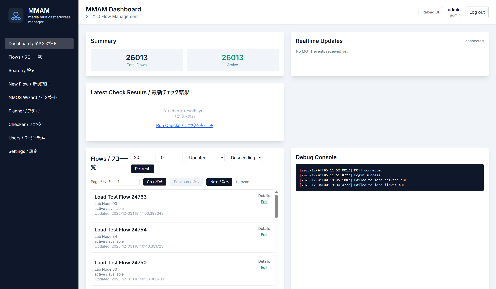

Dashboard
チェック結果・MQTT状態・Automationジョブの要約を静的サマリとして表示します。
GET /flows/summary– フロー総数と状態GET /automation/summary– スケジューラ状況GET /checker/latest– 直近の衝突/NMOS差分
Mock UI
バックエンドを持たない静的モックです。mmam-docker本体で利用しているAPIをそのまま記載し、どの画面で何を呼び出すのかを可視化します。

UI × API
各画面が参照するエンドポイントをまとめています。実際のバックエンドは同梱しないため、APIを叩かずに運用設計やレビューを行う用途に向きます。
チェック結果・MQTT状態・Automationジョブの要約を静的サマリとして表示します。
GET /flows/summary – フロー総数と状態GET /automation/summary – スケジューラ状況GET /checker/latest – 直近の衝突/NMOS差分Quick/Advanced検索フォームの構造とフィルターを確認できます。入力はAPIパラメータに変換されます。
GET /flows – クエリ/limitオプションGET /flows/{flow_id} – 詳細モーダルGET /flows/export – CSV/JSON出力
フォームの各フィールドとバリデーションをモック上で示し、REST PATCH/POSTを想定したワークフローを確認できます。
POST /flows – 新規作成PATCH /flows/{flow_id} – 編集POST /flows/{flow_id}/lock – 予約ロック
IS-04/05ベースURL入力から差分チェック/適用までのフェーズを分割表示。各ステップがどのAPIを叩くかを明示します。
POST /nmos/discover – ノード探索POST /nmos/detect-is05 – デバイス差分POST /flows/{flow_id}/nmos/apply – 反映アドレスマップの階層構造を静的に展開し、ビュー切替時のAPIを注釈で示します。
GET /address/buckets/overview – 上位フォルダGET /address/buckets/{bucket_id}/children – 子ビューGET /address/buckets/export – Backup衝突/NMOS検査の履歴タイムラインと、ジョブ制御ボタンが参照するエンドポイントを整理しています。
GET /checker/collisions – 衝突レポートGET /checker/nmos – NMOS差分POST /automation/jobs/{id}/enable – スケジュールPassive API Scripts
curlコマンドをコピーすると、実環境に接続した際にそのままテストできます（UIは実データを呼びません）。
GET /flows?limit=50
Authorization: Bearer <token>Search/Explorerが利用するベースエンドポイント。`q` や `site` パラメータを付与できます。
PATCH /flows/{flow_id}
Content-Type: application/jsonテキストハブのキー付きメモや各カスタムフィールドを更新。UIの手動更新と同じ構造です。
GET /address/buckets/exportExplorer/Manage/Backupが共通利用するJSON。モックではレスポンス例を固定表示しています。
POST /automation/jobs/{job_id}/enableCheckerタブの自動化トグルに紐づく呼び出し。`disable`/`PUT /automation/jobs/{id}` も同様に記載。
Distribution
`mock/` ディレクトリを任意のWebサーバに置くだけで動作します。バックエンドを同梱していないため、ネットワーク分離環境でUIレビューや教育資料として配布可能です。